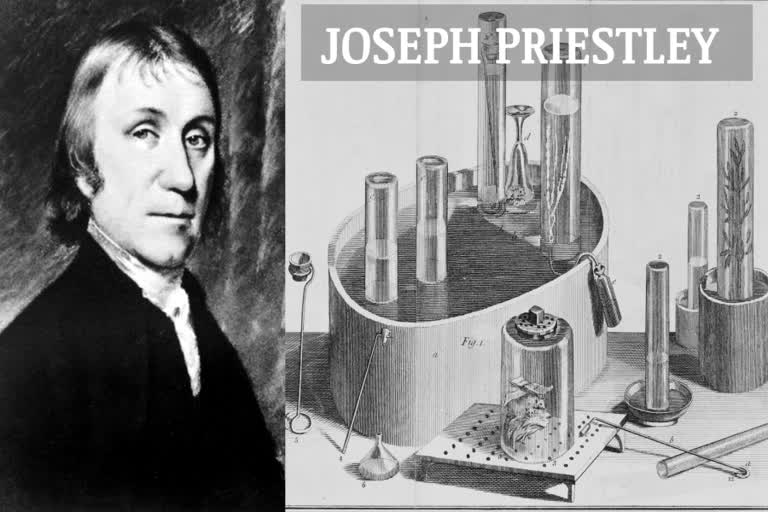
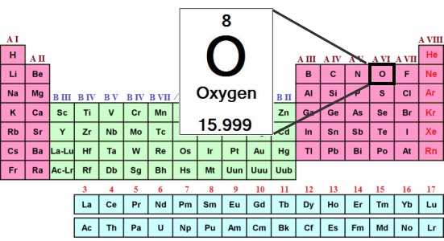

 Oxygen was discovered about 1772 by a Swedish chemist, Carl Wilhelm Scheele, who obtained it by heating potassium nitrate, mercuric oxide, and many other substances. An English chemist, Joseph Priestley, independently discovered oxygen in 1774 by the thermal decomposition of mercuric oxide and published his findings the same year, three years before Scheele published. In 1775–80, French chemist Antoine-Laurent Lavoisier, with remarkable insight, interpreted the role of oxygen in respiration as well as combustion, discarding the phlogiston theory, which had been accepted up to that time; he noted its tendency to form acids by combining with many different substances and accordingly named the element oxygen (oxygène) from the Greek words for “acid former.”

Oxygen is the chemical element with the symbol O and atomic number 8. It is a member of the chalcogen group in the periodic table, a highly reactive
nonmetal, and an oxidizing agent that readily forms oxides with most elements as well as with other compounds. Oxygen is Earth's most abundant
element, and after hydrogen and helium, it is the third-most abundant element in the universe. At standard temperature and pressure, two atoms of
the element bind to form dioxygen, a colorless and odorless diatomic gas with the formula O2 Diatomic oxygen gas currently constitutes
20.95% ofthe Earth's atmosphere, though this has changed considerably over long periods of time. Oxygen makes up almost half of the Earth's crust
in the form of oxides.
Dioxygen provides the energy released in combustion and aerobic cellular respiration, and many major classes of organic molecules in living
organisms contain oxygen atoms, such as proteins, nucleic acids, carbohydrates, and fats, as do the major constituent inorganic compounds of
animal shells, teeth,and bone. Most of the mass of living organisms is oxygen as a component of water, the major constituent of lifeforms. Oxygen
is continuously replenished in Earth's atmosphere by photosynthesis, which uses the energy of sunlight to produce oxygen from water and carbon
dioxide. Oxygen is too chemically reactiveto remain a free element in air without being continuously replenished by the photosynthetic action
of living organisms. Another form (allotrope) of oxygen, ozone O3, strongly absorbs ultraviolet UVB radiation and the high-altitude
ozone layer helps protect the biosphere from ultraviolet radiation. However, ozone present at the surface is a byproduct of smog and thus a pollutant.
| S.N. | Allotropes | Remarks |
|---|---|---|